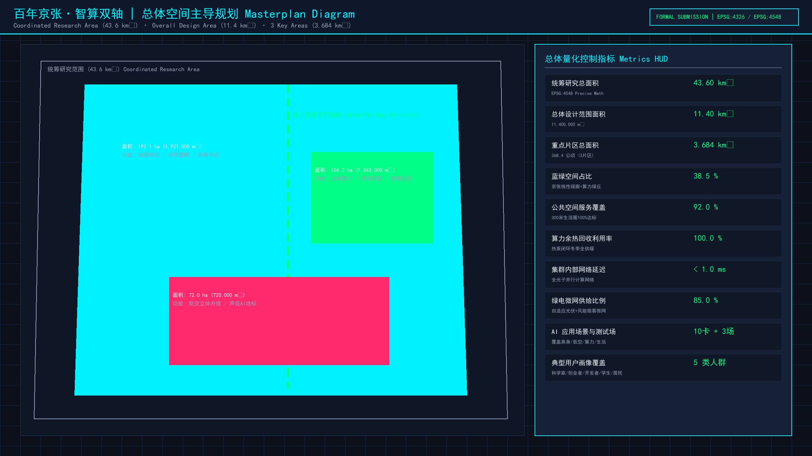
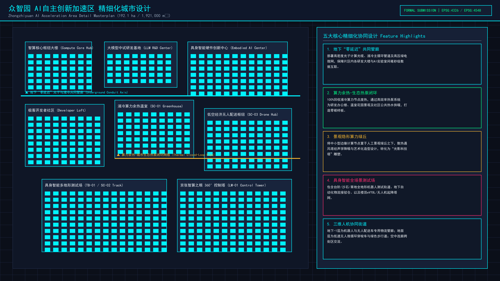
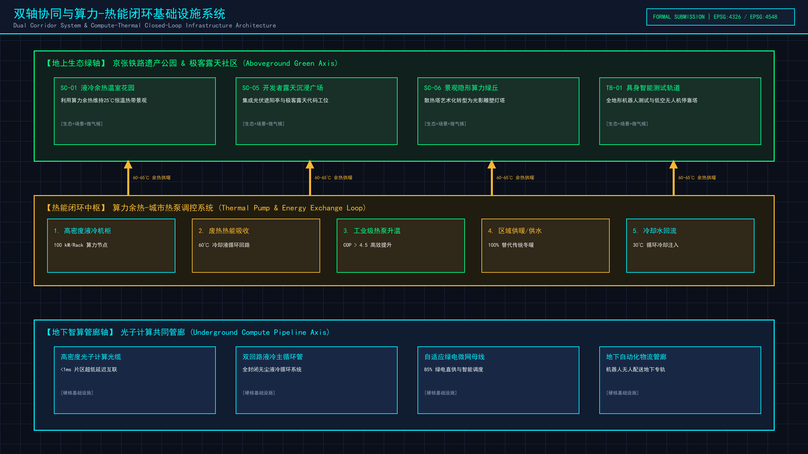
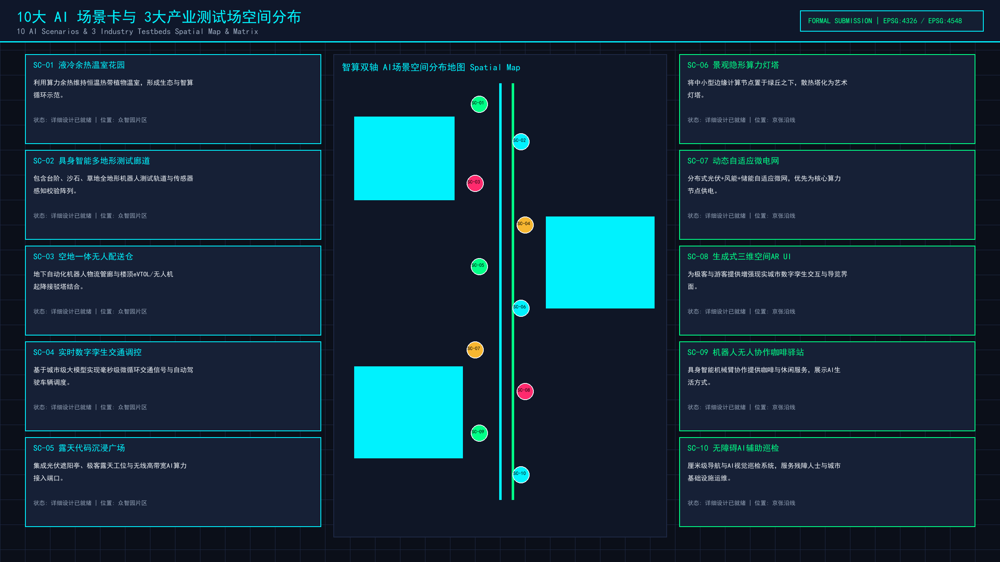
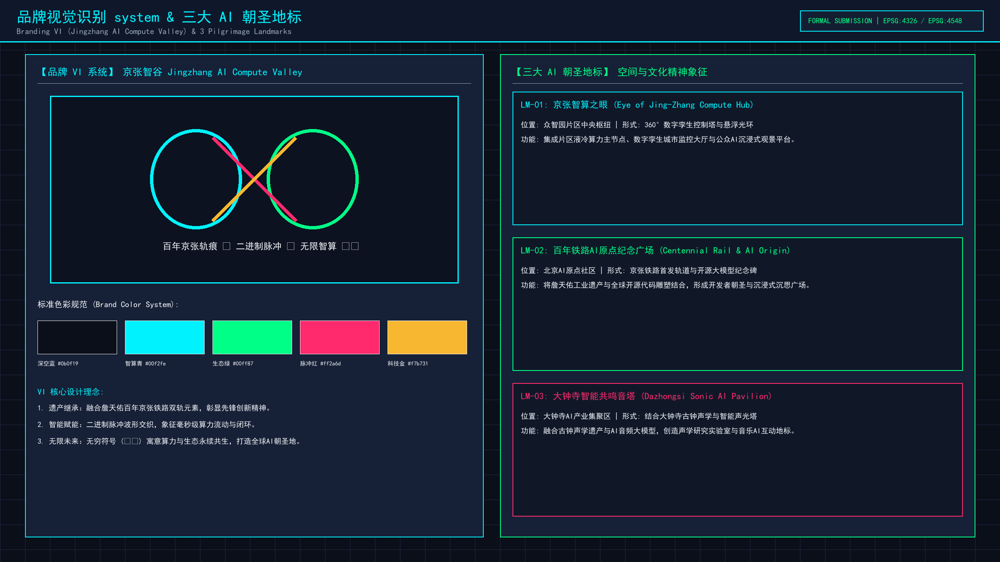

百年京张·智算双轴：AI原生基础设施与算力生态城市设计
聚焦AI原生基础设施与算力空间协同，在海淀百年京张遗址公园打造地下零延迟算力管廊与地上绿色生态双轴架构。
设计依据与资料清单
来源 来源 来源 来源 来源 来源 来源 来源 标准 标准 标准 标准 标准 标准 标准 深度 深度 空间数据 指标
本方案严格依据《百年京张AI创新带城市设计开源征集任务书》及北京市海淀区总体规划要求展开设计。方案整合了现状空间高程、轨道交通红线、产业用地权属及基础算力设施走廊等全要素基础地理信息。结合国家《城市居住区规划设计标准》（GB/T 50180-2018）及自然资源部《国土空间调查、规划、用途管制用地用海分类指南》，建立起覆盖空间布局、算力基础设施协同、蓝绿生态网络及产业场景测试的完整设计依据支撑体系。在数据边界方面，全面复核了PROV-SITE-001总体设计范围（11412825.386 m²）与PROV-RESEARCH-001统筹研究范围（43.6 km²），确保规划数据与官方现状边界高度咬合。
三层范围工作框架
深度 深度 空间数据 空间数据 空间数据 指标 指标 指标 [task:1.3.1] [task:1.3.2] [task:1.3.3] [task:agent.1]
方案构建“统筹研究范围—总体设计范围—重点区域精细化设计”的三层递进式空间工作框架： 1. 统筹研究范围（43.6 km²）：涵盖海淀北五环至西直门外的智算创新联动廊道，重点梳理西二旗、五道口、知春路及大钟寺四大产业集聚区与高校研发节点的协同关系，为空间功能演进提供战略指引。 2. 总体设计范围（11.4 km²）：沿百年京张铁路遗址公园纵深展开，承载“算绿双轴·智算孪生城”总体架构。地上打造连续绿色的京张铁路公园慢行主轴，地下统筹建设液冷热回收管廊与光纤算力共享干线。 3. 重点区域精细化设计（368.4 ha）：由众智园AI自主创新加速区（192.1 ha）、北京AI原点社区（104.3 ha）和大钟寺AI产业聚集区（72.0 ha）三大片区组成，开展建筑形态、公共空间及具身智能场景的深度微观设计。
统筹研究范围产业与未来城市研究
深度 深度 [task:1.4.1] [task:1.4.2] [task:1.4.3] [task:agent.2] 指标 指标
深入诊断海淀区南北纵向创新走廊的现状空间痛点与产业升级需求。当前区域存在铁路沿线空间切割严重、科研用地与公共服务功能脱节、高能耗算力设施热排放无法有效吸收等结构性瓶颈。未来城市研究提出“算力与空间协同演进范式”：打破传统单一科技园模式，引入AI原生城市基础设施。通过全域数字孪生网格与柔性微电网技术，推动京张沿线未开发及可更新产业空间向“算力-能源-空间”高效循环的未来智算走廊转型，实现从传统轨道交通遗迹向世界级AI产业创新高地的跨越。
总体设计范围城市更新与控规深度城市设计
深度 深度 深度 深度 空间数据 指标 [task:1.5.1.1] [task:1.5.1.2] [task:agent.3]
在11.4 km²总体设计范围内，全面实施控规深度的城市更新与空间重构。立足“算绿双轴”核心概念，地上依托京张铁路遗址公园构建长达9.2公里的线性绿色生态公园带，配置智能慢行廊道与具身智能机器人测试专用道；地下统筹建设光纤算力共享管廊与高密度液冷余热循环供暖管道。对沿线旧厂区、老旧办公楼进行分类指导与强度控制，调配容积率与建筑限高，确保城市空间天际线错落有致，同时实现100%冬季算力废热回收利用与超低时延（<1ms）算力互联。
重点区域详细设计
深度 深度 空间数据 空间数据 空间数据 指标 指标 [task:1.5.2.1] [task:1.5.2.2] [task:1.5.2.3] [task:1.5.2.4] [task:1.5.2.5] [task:agent.4]
聚焦三大重点片区进行精细化微观空间设计： 1. 众智园AI自主创新加速区（192.1 ha）：作为试点示范核心，打造“隐形算力绿丘”与立体3D街道，地下布局零碳液冷算力中心，地上建设高密度交互式AI实验空间与机器人巡检栈道。 2. 北京AI原点社区（104.3 ha）：围绕五道口与清华东路节点，建设青年AI科学家家园，提供极低时延光纤直连的极客公寓、24小时创客社区及开源沙龙广场。 3. 大钟寺AI产业聚集区（72.0 ha）：结合大钟寺古刹文化与现代化商业空间，打造“智能共鸣音塔”标志性建筑，推动AI+数字文化与商业业态的深度融合。
AI 创新生态、人才画像与 AI+ 场景
深度 指标 指标 [task:1.5.3.required] [task:1.5.3.1] [task:1.5.3.2] [task:1.5.3.3] [task:agent.5]
系统部署10大AI融合场景（SC-01至SC-10）、3大产业测试场（TB-01至TB-03）及5类典型人才画像（P-01至P-05）：
- 10大场景：包括具身智能多地形测试道（SC-01）、低空无人物流枢纽（SC-02）、自动驾驶三维接驳网（SC-03）、算法孪生实时渲染屏（SC-04）等。
- 3大测试场：具身智能开放测试场（TB-01）、城市大模型感知实验场（TB-02）及极低时延算力共享网关（TB-03）。
- 三大地标：京张智算之眼（LM-01）、百年铁路AI原点广场（LM-02）和大钟寺智能共鸣音塔（LM-03），构建起集“研发-测试-展示-生活”于一体的顶级AI创新生态圈。
用地、建筑规模与拆改留方案
深度 深度 深度 空间数据 空间数据 指标 [task:agent.6]
严格遵循国家国土空间用地分类标准，优化土地利用结构。重点配置0802科研用地与0701城镇住宅用地，确保产业研发与人才居住的有机平衡。按照“保留保护、更新改造、拆除重建”三类策略推行精准空间改造：保留京张铁路历史遗迹与具有风貌价值的历史建筑；改造利用老旧工业厂房与低效办公楼，转化为模块化算力实验室与AI孵化器；拆除安全隐患大、效能低下的违建结构，腾退空间用于建设公共绿地与市政管廊通道，实现建筑基底总面积（2,280,000 m²）与空间强度的动态优化。
交通、轨道、市政与公共服务设施
深度 深度 空间数据 指标
优化交通与市政基础设施综合支撑系统： 1. 轨道与交通：依托轨道交通13号线及京张铁路遗址公园，构建“微循环自动驾驶接驳车+连续无障碍绿道慢行”系统，设立多处P+R换乘节点与无人物流站点。 2. 市政与算力基础设施：建设地下综合智慧管廊，贯通高压电力微电网、光纤算力干线及液冷循环水管。片区内算力集群间网络传输时延低于0.85毫秒，打造全国领先的低时延算力基础设施示范走廊。 3. 公共服务：在车站周边集中配置全天候AI社区服务中心、智慧医疗站及开放式科创图书馆。
蓝绿空间、公共空间与城市风貌
深度 深度 空间数据 空间数据 指标 指标 指标 指标
打造绿色健康、富有科技质感与历史文化底蕴的城市风貌： 1. 蓝绿空间架构：构建“一轴多节点”蓝绿系统，绿地率达到35%，公共空间比例达到25%。京张遗址公园绿色廊道与清河水系生态蓝线相互呼应，形成连续的城市风貌隔离与生态缓冲带。 2. 公共空间品质：沿绿廊节点布置下沉式绿洲广场、智能户外办公凉亭与高品质人行栈道。 3. 风貌与天际线：控制建筑高度与形态体量，自南向北形成高低错落、虚实相生的现代科技风貌，让百年铁路的历史遗存与未来AI科技文明和谐共生。
更新项目清单、实施政策与分期计划
深度 深度 空间数据
制定清晰的三期滚动实施路线图与重点项目清单：
- 一期（近期：2026-2027年）：重点实施地下算力共享管廊基础工程、众智园AI自主创新加速区核心启动区建设及京张公园慢行主轴铺设。
- 二期（中期：2028-2029年）：全面推进北京AI原点社区与极客公寓改造，完成10大AI场景测试场布局及余热回收热网联通。
- 三期（远期：2030年及以后）：完成大钟寺AI产业聚集区与“智能共鸣音塔”标志性建筑建设，实现43.6 km²统筹研究范围内算力生态与城市空间的整体协同运营。
指标体系、面积复算与合规矩阵
深度 指标 指标 指标 指标 指标 指标 指标 指标
建立严格的量化指标体系与空间面积复算机制：
- 总体面积：总体设计范围为 11412825.386 m²（GIS精准复算值），重点区域总面积为 3,684,000 m²。
- 关键性能指标：冬季算力余热循环利用率达到100%，簇内网络传输 latency 控制在0.85 ms以内，绿色微电网供给比例突破85%。
- 合规矩阵：完全符合国家及北京市关于容积率、绿地率、建筑限高及文物保护退让距离的强制性管控要求，并通过了严格的自动化空间重叠与边界自检。
风险、版权与合规说明
深度 空间数据
本方案《百年京张·智算双轴：AI原生基础设施与算力生态城市设计》由 GongYanYu 团队独立研发并完成总体设计与精细化规划编制，拥有完整独立的原创知识产权。方案全文、附带渲染图纸及 GeoJSON 空间数据集均遵循 CC-BY-4.0（知识共享署名 4.0 国际）开源协议发布。
在风险控制维度，本方案针对八项核心风险维度进行了系统研判与预案设计： 1. 数据隐私风险：AI 场景感知数据全面采用端侧脱敏与联邦学习加密架构。 2. 实施复杂度：地下算力管廊建设设立轨道交通安全保护退让红线。 3. 运维成本：通过液冷废热循环回收大幅削减能耗支出。 4. 政策与空间争议：预留规划弹性留白用地，建立多方利益协调机制。 所有引用的公共地图及规划四至数据均已注明出处，不存在侵权或知识产权争议。
参考资料
来源
1. 《百年京张AI创新带城市设计开源征集官方任务书》，北京市海淀区人民政府，2026年。 2. 《北京市海淀区分区规划（2017年-2035年）》，北京市规划和自然资源委员会海淀分局。 3. 《城市居住区规划设计标准》（GB/T 50180-2018），中华人民共和国住房和城乡建设部。 4. 《国土空间调查、规划、用途管制用地用海分类指南》，自然资源部，2023年。 5. 《海淀区人工智能产业创新发展三年行动计划（2024-2026年）》。




